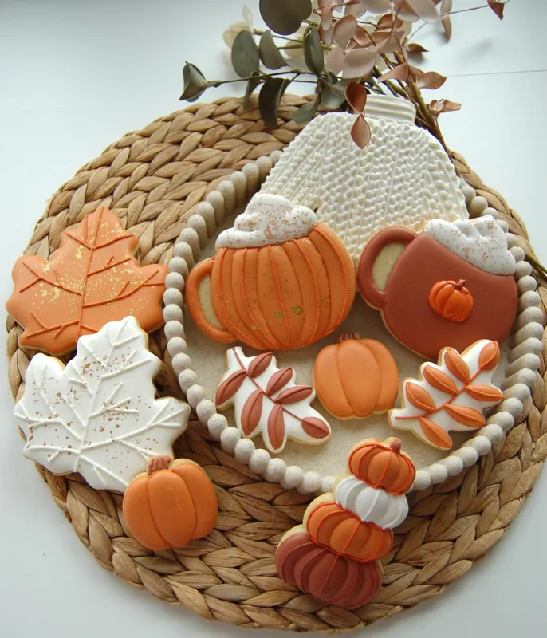
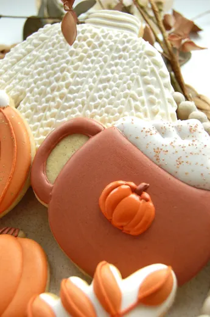
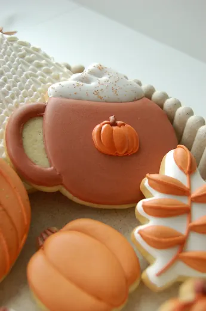
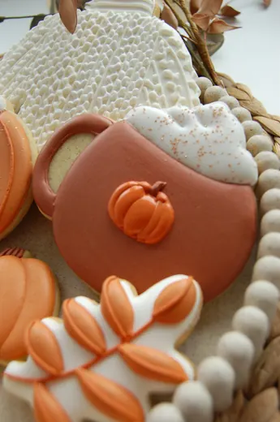
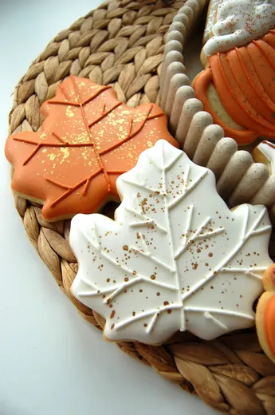

Automne
Une collection aux teintes de saison : terracotta, orange brûlé, blanc cassé et éclats dorés. Feuilles d’érable nervurées, citrouilles, tasses fumantes et petits feuillages, tous décorés à la main au glaçage royal. Elle se commande en assortiment prêt à offrir.
- 3 packages au choix, composés d’avance
- Sans minimum de commande
Collection Automne
Une sélection de biscuits aux couleurs douces et chaleureuses de la saison.




